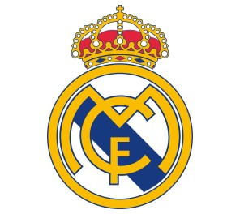

REAL MADRID FOOTBALL CLUB

Real Madrid is a Spanish professional football team founded in 1902, located in the Spanish capital, Madrid. The team plays in the Spanish League and was chosen as the best football team in the twentieth century, has won the Spanish League 34 times, nineteen times the King's Cup and scored a record with 13 Champions League tournaments. Wikipedia
Hall / Stadium : Santiago Bernabeu Stadium
Technical Director : Zinedine Zidane
Founded : March 6, 1902
Head : Florentino Perez
Founders : Julian Plasios , Adolfo Mlendez , Joan Badros , Carlos Badros